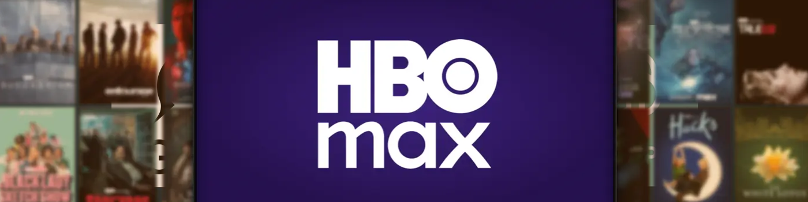
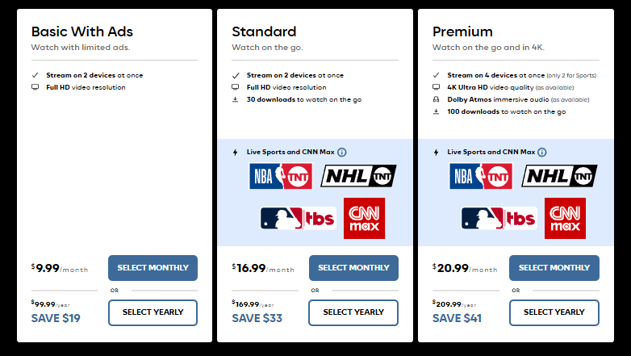
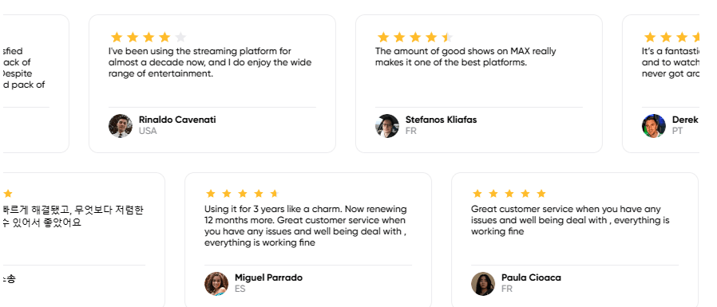
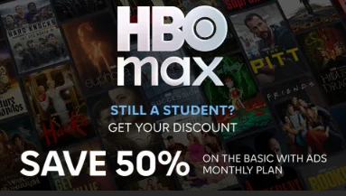

2025 年 HBO Max：訂閱價格、優惠及省錢方法
兩年過去了，Max 的名字又改回了 HBO Max，作為老用戶，我原本期待著能有一些促銷活動，結果迎接我的卻是新輪的漲價。
隨著訂閱費用持續上漲，許多用戶開始思考 HBO Max 是否仍然物有所值，或者如何以更低的價格享受完整的體驗。本指南將為你提供幫助。
我將分析新的定價、比較計劃並分享在不損失 4K 質量或無廣告體驗的情況下節省的最佳方法。
HBO Max 定價和計劃變更
2025 年 HBO Max 價格
2025年，HBO Max 在美國提高了所有新老用戶的價格。與2023年不同，當時原有的無廣告版用戶享有6個月的寬限期，而新價格則立即生效。
目前，HBO Max 有三種套餐：帶廣告的基本套餐為 9.99 美元/月（99.99 美元/年），標準套餐為 16.99 美元/月（169.99 美元/年），高級套餐為 20.99 美元/月（209.99 美元/年）。

除了價格上漲外，Max 還進行了一些功能調整。自 2025 年 3 月 30 日起，帶廣告的 Basic 套餐將不再包含 CNN Max 或 Bleacher Report Sports 節目。如需繼續觀看直播新聞和體育賽事，你需要升級到 Standard 或 Premium 套餐。
HBO Max 價格歷史
HBO Max 自 2023 年以來每年都會漲價。Premium 版從 14.99 美元漲到 15.99 美元，然後在 2024 年漲到 19.99 美元，到 2025 年 7 月達到 20.99 美元。Standard 版漲到 16.99 美元，而 Basic 版保持在 9.99 美元。
Max 表示，漲價的原因是原創節目、體育賽事直播版權支出增加，以及運營成本上升。他們還希望與 Netflix 和 Disney+ 保持競爭力，但價格差距不能太大。
但對我們來說，保持同樣的觀看體驗只會越來越貴。所以，尋找省錢的方法是有意義的。
2025 年 HBO Max 最佳優惠和折扣
HBO Max 擁有豐富的影視庫和強大的內容陣容，但其高級會員每月收費 20.99 美元，價格不菲。好在，我們還有其他方法可以以更低的價格獲得同樣的體驗。
通過 奈飛小鋪 以更低價格訂閱 HBO Max Premium
如果你像我一樣，喜歡 Premium 的高質量、無廣告體驗，但又不想支付全價，那麼 奈飛小鋪 的共享帳戶選項值得考慮。
其提供HBO Max Premium共享賬戶服務，年費僅需55美元左右，比官方訂閱便宜70%以上。
更重要的是，功能完整無缺 —— 支持 4K、杜比音效，並允許下載多達 100 部電影，與官方高級版完全相同。
使用方法很簡單。奈飛小鋪 提供經過驗證的共享 HBO Max 帳戶。下單後，你將獲得新的登錄信息，無需關聯郵箱或輸入任何個人信息即可立即開始觀看。
這項服務也很可靠。奈飛小鋪 提供
對於任何熱愛電視劇、電影大片或體育賽事直播的人來說，奈飛小鋪 無疑是最超值的選擇之一。無論你是在等待《龍之屋》的下一季，還是全年都在觀看比賽，奈飛小鋪 都絕對值得一試。
學生折扣
如果你是美國的學生並且年滿 18 歲，那麼還有更優惠的學生優惠。
通過 UNiDAYS 驗證後，你可以以每月 4.99 美元的價格（而非常規的 9.99 美元）購買帶廣告的基本套餐。這相當於 50% 的折扣，但僅限美國學生使用。
節日促銷
HBO Max 有時會在黑色星期五、網絡星期一、聖誕節或其自己的銷售活動期間推出大型促銷活動。
過去，優惠包括六個月的 Premium 服務，價格為 44.99 美元，或部分新用戶前三個月每月 1.99 美元。這些優惠很少見，而且持續時間不長，所以如果你錯過了一次，可能要過一段時間才能再次享受。
會員禮物
一些美國供應商，如 AT&T Unlimited Elite、AT&T Fiber、Spectrum 和 Cricket Wireless，在其計劃中都包含 HBO Max。
使用這些服務的用戶只需打開 HBO Max 即可開始觀看。請注意，此優惠可能並非在所有地區或所有套餐中都適用，並且可能隨時更改。
捆綁訂閱
有時，HBO Max 會與 Netflix、Disney+ 或 Paramount+ 等其他流媒體服務捆綁銷售，或者作為有線電視套餐的一部分以較低的價格銷售。
如果你只想看HBO Max，對其他平台興趣不大，那麼雖然捆綁包的單價比較便宜，但總支出實際上會更高。
總結一下，雖然節假日促銷、運營商贈送等方式也能省錢，但這些方式並非隨時可用，且有條件限制。相比之下， 奈飛小鋪 可以隨時使用，價格固定，功能也基本相同，所以我還是最推薦它。
HBO Max 與 Netflix、Disney+ 和 Paramount+
近年來，我嘗試過大多數主流流媒體平台，但使用最多的仍然是 HBO Max。為了比較它的定價，我製作了一個與其他主流平台的對比圖表：
| 平台 | 有廣告（月費/年費） | 標準（月費/年費） | 保費（月費/年費） | 主要內容特點 |
|---|---|---|---|---|
| 每月 7.99 美元 每年 59.99 美元 | — | 每月 12.99 美元 每年 119.99 美元 | CBS、Showtime、體育、美國電視節目 | |
| 每月 9.99 美元 | — | 每月 15.99 美元 每年 159.99 美元 | 迪士尼、漫威、星球大戰、主要系列電影 | |
| 每月 9.99 美元 每年 99.99 美元 | 每月 16.99 美元 每年 169.99 美元 | 每月 20.99 美元 每年 209.99 美元 | 華納兄弟圖書館、體育賽事直播 | |
| 每月 7.99 美元 | 每月 17.99 美元 | 每月 24.99 美元 | 龐大的圖書館，豐富的原創內容 |
HBO Max Premium 的價格比Netflix 、Disney+ 或 Paramount+略高，但憑藉華納兄弟電影、經典 HBO 節目和現場體育賽事，它在內容和質量方面仍然脫穎而出。
如果你想一站式觀看優質視頻內容，利用之前分享的訂閱技巧，你可以輕鬆以遠低於官方價格的價格享受完整的 HBO Max Premium 體驗，性價比更高。
如何取消 HBO Max 訂閱？
取消並不難。如果你是在 HBO Max 網站上註冊的，只需登錄，前往"設置"，找到"訂閱"，然後取消即可。你仍然可以使用該服務，直到當前結算期結束。
你需要在設備設置中取消通過 App Store 或 Google Play 進行的訂閱。在 iPhone 或 iPad 上，前往"設置"→"Apple ID"→"訂閱"。在 Android 設備上，打開 Play Store 並導航至"付款和訂閱"。
對於通過 AT&T、亞馬遜、Apple TV、Roku 或 Hulu 等第三方平台加入的用戶，必須在其平台上取消訂閱。有些供應商可能會要求你聯繫客服，因此最好提前幾天取消，以免再次被扣款。
結論：2025 年訂閱 HBO Max 的最佳方式
HBO Max 的庫和內容質量一直都很好，但 Premium 的價格確實在連年上漲。
如果只是偶爾使用，可以等待促銷活動或者使用運營商的贈品；
但如果你打算繼續使用，並希望獲得完整的高級版訪問權限， 奈飛小鋪 可能是最好的選擇。它的年費不到 55 美元，約為官方價格的四分之一，但你仍然可以享受同樣的 4K 分辨率、無廣告和多設備支持。
這樣算下來，無論是狂看電視劇、看電影，還是觀看體育直播，你都可以以實惠的價格享受到最佳的 HBO Max 體驗。
常問問題
如何以最便宜的價格獲得 HBO Max？
觀看 HBO Max 最便宜的方式是通過 奈飛小鋪。高級賬戶僅需 189元/年，即可享受全套功能，價格僅為官方價格的一小部分。
我可以分享我的 HBO Max 訂閱嗎？
是的，HBO Max 允許多個流媒體播放，具體取決於你的套餐。高級套餐最多支持 4 個流媒體同時播放，非常適合與家人或朋友分享。
你可以隨時取消 Max 嗎？
是的，你可以隨時取消 Max 訂閱。無論你選擇的是月費還是年費套餐，都無需承擔長期合約。取消訂閱後，你仍然可以使用 Max 服務，直到當前結算期結束。